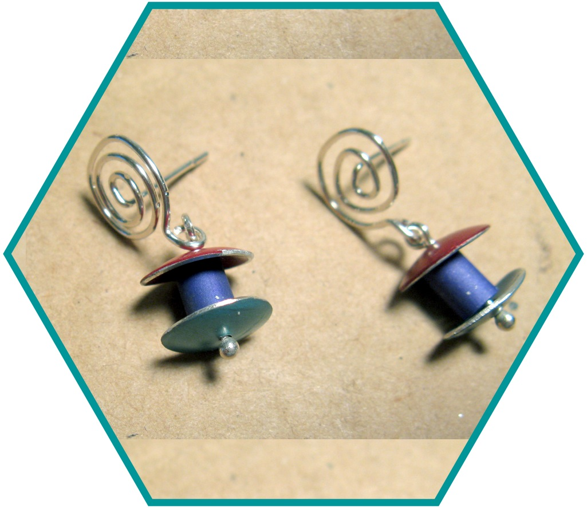
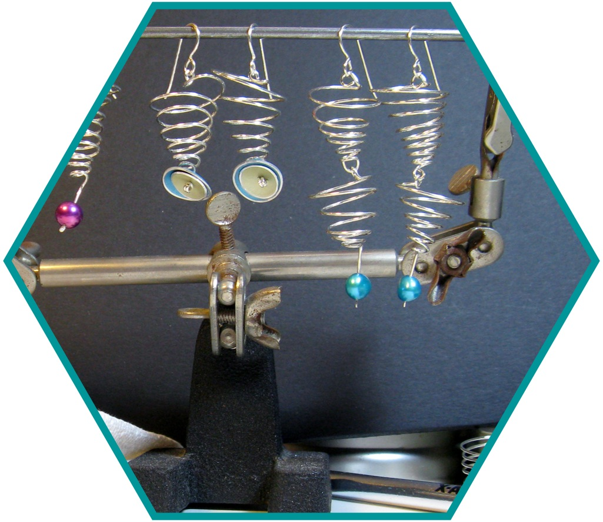

Earrings
I grew up as an indentured servant in my parents' jewelry and metal studio. While homeschooling during middle school, I developed these Spiral Drop earrings after many hours of playing and experimenting with wire and shapes.
Spiral Drops were part of our catalog for four years, from 1999 - 2003. When I left for college, they were discontinued since I wouldn't be around to make them. During their run, though, they were carried in everything from museum shops to the shops on board the ships of Clipper Cruise Lines.
I was responsible for every aspect of production - making all of the individual pieces, making sure that my material needs did not conflict with anyone else's, ensuring that we had stock on hand at all times, creating pieces to exhibit at craft shows, filling wholesale and retail orders, and the actual production of the earrings.

These were also developed for my parents while I was homeschooling while I was playing around with designs that eventually became the Spiral Drops. These were not as popular, and did not have as long a run.
I was again responsible for every aspect of production for the few pairs that were produced. The vortex shape has inspired several other pairs of earrings and a recent mobile.